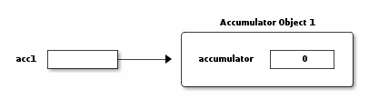

Javaプログラミング入門
Table of Contents
1 Javaとは何?
- オブジェクト指向プログラミング言語
- 1995年にサン・マイクロシステムズ社(現オラクル)が開発
- http://www.oracle.com/jp/technologies/java/
- アーキテクチャ独立
- 計算機のCPUやOSの異なった様々なプラットフォーム上で， 同一プログラムを利用できる (Write Once, Run Anywhere)．
- Javaプログラムは， 抽象機械JVMの機械語にコンパイルされ， JVMインタプリタで実行される．
- 利用分野
- Webアプリケーション
- PDA
1.1 参考リンク
- Java Tutorials
- Essentials of the Java Programming Language: A Hands-On Guide
- Thinking in Java
- Javaの道
- Javaとパズルの世界 (藤原さん)
- プログラミング言語論
1.2 Java言語の特徴: Cとの違いを中心に
- オブジェクト指向言語
- Cに似た構文
- ポインタがない
- 配列範囲などの動的なチェック
- ガーベジ・コレクション
- マルチスレッドのサポート
- 例外処理
1.3 HelloKobeプログラム
1: public class HelloKobe { 2: public static void main(String args[]) { 3: System.out.println("Hello Kobe!"); 4: } 5: }
- HelloKobe.java を作成する．
- コンパイル (HelloKobe.classが作成される)
$ javac HelloKobe.java
- 実行 (HelloKobe.classが実行される)
$ java HelloKobe
1.4 AccAppletプログラム
1: public class AccApplet extends Applet { 2: Accumulator acc; 3: TextField accField; 4: TextField inputField; 5: 6: public void init() { 7: ..... 8: } 9: 10: public void paint(Graphics g) { 11: .... 12: } 13: } 14: 15: class Accumulator { 16: ..... 17: }
- AccApplet.java を作成し，コンパイルする
- AccApplet.html を作成する
- Webブラウザで AccApplet.html を開くと， AccApplet.classが実行される
1.5 練習問題
- HelloKobeプログラムを実際に実行せよ．
- AccAppletアプレットを実際に実行せよ．
- 右側に数値を入力すると，左側に累計が表示される
2 オブジェクト指向とは何?
D. GelernterとS. Jagannathanは，「プログラムとは機械である」 と述べている．すなわちプログラムは，物質的な実体は存在しないが， ある機能を実現するための機械の一種(ソフトウェア機械)と考えることができる．
すると，プログラムを設計しコーディングするいうことは， 機械を設計し作成することに相当する． 機械の設計・作成において，我々は普通，すでにある部品を利用し， それらの機能を組み合わせることによって新しい機能を持った機械あるいは部品を作り上げる．
オブジェクト指向プログラミング は， まさにそれと同じことをプログラムの作成において行うための考え方である． すなわち，なんらかの機能を持った オブジェクト を組み合わせて新しい機能を持ったオブジェクトを構築し， 全体として一つのソフトウェア機械を実現するのである．
たとえば，前述の AccApplet.java は，以下のオブジェクトを組み合わせて 実現されている．
acc: 累計を数える累算器(アキュムレータ)accField: 累算器の値の表示場所inputField: 数の入力場所
最後の二つはJavaシステムにあらかじめ用意されているオブジェクト (正確には用意されているクラスのオブジェクト)であり， 最初の累算器はこのプログラム中で機能を定義しているオブジェクトである．
Javaには数多くのクラスが用意されており， プログラマはこれらおよび自分で定義したオブジェクトを自由に組み合わせて 自分のプログラムを作成できる．
Java以外のオブジェクト指向プログラミング言語としては， C++, Objective C, Smalltalk, Python, Perl, Ruby, JavaScriptなどがある．
3 オブジェクトとクラス
では，Javaでのオブジェクトとはどんなものなのだろうか? 累算器オブジェクトを見ると，以下のようなものから構成されている．
- 累計を覚えておくint型の変数
accumulator - 累計に加算する機能を果たす
add - 累計を答える機能を果たす
value
一般には，Javaのオブジェクトは，以下のものから構成される．
- オブジェクトの状態を覚えておくための インスタンス変数
- 累算器の場合は変数
accumulator
- 累算器の場合は変数
- オブジェクトの機能を果たすための メソッド
- 累算器の場合は
addとvalue
- 累算器の場合は
したがって，オブジェクトを定義するには，インスタンス変数とメソッドを定義すればよい． しかし，プログラム中では 同様の振る舞いをする複数のオブジェクトを必要とすることが多い． たとえば，複数の累算器が必要な場合，それぞれの累算器を別々に定義するのは無駄である．
そこでJavaでは，オブジェクトの型紙となる クラス を定義する． クラスの定義を型紙として，型紙から生成された具体例( インスタンス )が 個々のオブジェクトとなる． オブジェクトの生成はnew命令で行う．
3.1 クラス定義の例
AccTest.java 中の Accumulator クラスを見てみる．
1: class Accumulator { 2: int accumulator = 0; 3: 4: void add(int x) { 5: accumulator += x; 6: } 7: 8: int value() { 9: return accumulator; 10: } 11: }
- クラス名は
Accmulator - 累算器の値を覚えておくインスタンス変数
accumulator - 渡された値を累算器に加えるメソッド
add - 現在の累算器の値を返すメソッド
value
3.2 オブジェクト生成の例
AccTest.java 中の main の部分を見てみる．
1: public class AccTest { 2: public static void main(String args[]) { 3: Accumulator acc1; 4: Accumulator acc2; 5: acc1 = new Accumulator(); 6: acc2 = new Accumulator(); 7: acc1.add(10); 8: acc2.add(20); 9: acc1.add(30); 10: acc2.add(40); 11: System.out.println(acc1.value()); 12: System.out.println(acc2.value()); 13: } 14: }
このプログラムでは，二つのAccumulatorオブジェクトを生成している．
変数 acc1, acc2 は，Accumulatorオブジェクトを参照する変数として宣言されている．
文 acc1 = new Accumulator() により，
新しいAccumulatorオブジェクトが生成され，そのオブジェクトへの参照が
acc1 に代入される．
次の文 acc2 = new Accumulator() も同様である．
それぞれのAccumulatorオブジェクトは，別々のインスタンス変数を持っている．

オブジェクトに対するメソッドの呼び出しは，以下のようにして行う．
acc1.add(10); acc2.add(20);
まず acc1 の参照しているAccumulatorオブジェクトに対して，
add(10) というメソッドを実行し，
次に acc2 の参照しているAccumulatorオブジェクトに対して，
add(20) というメソッドを実行している．
それぞれのオブジェクトのインスタンス変数は，別々だから結局40と60が表示される．
変数 acc1, acc2 は，Accumulatorオブジェクトを参照する変数であるという点に注意する．
たとえば，以下の代入を行った後は， acc1 と acc2 は全く同じオブジェクトを
参照することになる．
acc1 = acc2;
3.3 練習問題
- 以下の場合，何が表示されるか．
acc1 = new Accumulator(); acc2 = new Accumulator(); acc1.add(10); acc2.add(20); acc1 = acc2; acc1.add(30); acc2.add(40); System.out.println(acc1.value()); System.out.println(acc2.value());
- Accumulatorクラスの定義に，累算器の値を0にリセットするメソッド
void reset()の定義を加えよ．
4 クラス階層と継承
前節のAccumulatorクラスを拡張し， これまでの平均値を返すメソッドを追加することを考えよう．
Accumulatorクラス自体の定義を書き換えるのでも良いが， ここではそうせずに，Accという新しいクラスを定義したいとする (たとえば，Accumulatorクラスの定義は他人が書いたものなので変更したくない，などの理由で)．
Accクラスの定義を書いてみると，例えば次のようになるだろう．
1: class Acc { 2: int accumulator = 0; 3: int count = 0; 4: 5: void add(int x) { 6: accumulator += x; 7: count++; 8: } 9: 10: int value() { 11: return accumulator; 12: } 13: 14: double average() { 15: return (double)accumulator / (double)count; 16: } 17: }
この程度ならば，新たにAccクラスを定義するのは簡単である． しかし，元のAccumulatorクラスが多くの機能を持っており， プログラムの規模も大きい場合， ほぼ同じ機能を持った別のAccクラスを新たに定義するのは無駄だろう．
Javaでは，AccクラスをAccumulatorクラスの 拡張クラス として 定義することで，インスタンス変数やメソッドの定義を 継承 する ことができる．
拡張クラスは， サブクラス あるいは 子クラス とも呼ばれる． 逆に，元のクラス(今の場合Accumulatorクラス)は， スーパークラス あるいは 親クラス と呼ばれる． すなわち，AccクラスはAccumulatorクラスのサブクラスであり， AccumulatorクラスはAccクラスのスーパークラスである．
サブクラスでは，スーパークラスにあるインスタンス変数やメソッドは， 再度定義する必要はなく，そのまま利用できる．
サブクラスおよびスーパークラスというクラス間の関係を クラス階層 と呼ぶ． クラス階層は，生物学での生物の分類によく似ている． 人間のスーパークラスは哺乳類であり， 哺乳類のスーパークラスは脊椎動物，脊椎動物のスーパークラスは動物， 動物のスーパークラスは生物と続く．
Javaではクラス階層は木構造になっている． すなわち，どのクラスも複数のスーパークラスを持つことはない． また，Javaでは，クラス階層の頂点にあるスーパークラスは Objectクラスと呼ばれる特別なクラスである． 先ほどのAccumulatorクラスはObjectクラスのサブクラスになる．
4.1 サブクラス定義の例
Javaでサブクラスを定義する時は，extendsキーワードを用いる． AccTest2.java 中のAccクラスは， Accmulatorクラスのサブクラスとして定義した例である．
1: class Acc extends Accumulator { 2: int count = 0; 3: 4: void add(int x) { 5: accumulator += x; 6: count++; 7: } 8: 9: double average() { 10: return (double)accumulator / (double)count; 11: } 12: }
スーパークラスのAccmulatorクラスに定義されている
インスタンス変数 accumulator とメソッド value は，
サブクラスのAccでも同一なので，記述が省かれている．
すなわち，これらはAccmulatorクラスから継承されている．
ただし add メソッドは，Accmulatorクラスとは異なっているので，
Accクラスで定義し直している．
このようなメソッドの再定義を，メソッドの オーバーライド と呼ぶ．
まとめると以下のようになっている．
- インスタンス変数
accumulator: 継承 - インスタンス変数
count: 追加 - メソッド
add: オーバーライド - メソッド
value: 継承 - メソッド
average: 追加
このようにスーパークラスからの違いだけを記述する方法を 差分プログラミング という． Javaの継承のメカニズムは，差分プログラミングを可能にしている．
複数のスーパークラスを持つことを許す(多重継承と呼ぶ) オブジェクト指向言語も存在するが， プログラムの動作の理解が困難になる． Javaでは分かりやすさの点から単一継承である．
Accクラスのメソッド add をよく見ると，一部はAccumulatorクラスの add と同一である．
この場合は一行だけだから，再度記述しても問題ないが，
もっと多い場合にはどのようにすれば良いだろう．
これは，Accクラスの add メソッド内からAccumulatorクラスの add メソッドを
呼び出せれば解決する．
Javaでスーパークラスのメソッドを呼び出すには， super キーワードを用いる．
1: void add(int x) { 2: super.add(x); 3: count++; 4: }
これを super.add(x) ではなく，単に add(x) としたとすると，
Accクラスの add メソッドが呼び出されるので無限ループになる．
また， super とよく似たキーワードに this がある．
this は，現在操作されようとしているオブジェクト自体を参照する．
4.2 練習問題
- Accクラスの
averageメソッドの定義を，valueメソッドを利用するように書き直せ． - Accクラスのサブクラスとして，
分散を返すメソッド
double variance()を持つクラスAccVを定義せよ． \(x_1\), \(x_2\), …, \(x_n\) の分散 \(v\) は以下の式で求めることができる (ここで μ は平均値)． \begin{eqnarray*} v & = & \frac{1}{n} \sum_{i=1}^n x_i^2 - \mu^2 \end{eqnarray*}
5 Java言語
ここでは，Javaの基本的な構文を説明する．
5.1 基本データ型
| 型 | 値 | サイズ |
|---|---|---|
byte | 符号付き整数 (-128..127) | 8ビット |
short | 符号付き整数 (-32768..32767) | 16ビット |
int | 符号付き整数 (-231..231-1) | 32ビット |
long | 符号付き整数 (-263..263-1) | 64ビット |
float | 浮動小数点数 | 32ビット |
double | 浮動小数点数 | 64ビット |
char | ユニコード文字 | 16ビット |
boolean | 論理値 (trueまたはfalse) | 1ビット |
5.2 配列オブジェクト
Javaでは，配列はオブジェクトと同様に取り扱われている．
1: int a[]; 2: a = new int[100]; 3: for (int i = 0; i < a.length; i++) { 4: a[i] = i; 5: }
- 上のプログラムで，変数
aは整数配列オブジェクトを参照する変数として宣言されている．aの初期値はnullである． - 次の文で，サイズ100の整数配列オブジェクトが生成され，
aはその配列オブジェクトを参照する． a.lengthは，aの参照している配列オブジェクトのサイズを値とする．
多次元配列は以下のように記述する．
1: double m[][]; 2: m = new double[100][200];
m[i] は，それぞれサイズ200のdouble配列への参照となる．
したがって， m[i][j] で各要素の値を取り出せる．
5.3 文字列
Javaでは， String オブジェクトを文字列として使用する．
1: String s; 2: s = "abracadabra"; 3: System.out.println(s.length()); 4: if (s.equals("sesami")) { 5: System.out.println("open " + s); 6: }
length は，文字列の長さを返すメソッドである．
equals は，文字列の比較を行うメソッドである．
+ 演算子で連結した文字列を求めることができる．
5.4 文
制御構文は，Cと良く似ている．
- if-else文
- switch文
- for文
- while文
- do-while文
- break文，continue文
6 プログラム例
6.1 複素数クラスの例
Complexクラスは他のプログラムからも利用できるように， Complex.java ファイル中でpublicなクラスとして宣言する．
1: public class Complex { 2: public double re = 0.0; 3: public double im = 0.0; 4: 5: public Complex(double x, double y) { 6: re = x; 7: im = y; 8: } 9: 10: public Complex plus(Complex z) { 11: return new Complex(re + z.re, im + z.im); 12: } 13: 14: public String toString() { 15: return re + "+" + im + "i"; 16: } 17: }
Complexクラス中の
Complex(double x, double y) は， コンストラクタ と呼ばれる．
コンストラクタは，オブジェクトをnew命令で生成する時に呼び出される．
以下のように複数のコンストラクタを定義できる．
1: public Complex() { 2: } 3: 4: public Complex(double x) { 5: re = x; 6: } 7: 8: public Complex(double x, double y) { 9: re = x; 10: im = y; 11: }
どのコンストラクタが呼び出されるかは， new命令で生成する時の引数によって異なる．
plus メソッドも，
doubleが引数で与えられた場合とComplexオブジェクトが引数で与えられた場合の
二通りを定義することもできる．
1: public Complex plus(double x) { 2: return new Complex(re + x, im); 3: } 4: 5: public Complex plus(Complex z) { 6: return new Complex(re + z.re, im + z.im); 7: }
toString メソッドは，Complexオブジェクトを文字列に変換するメソッドである．
toString メソッドは，文字列に変換する必要がある場合
(例えば System.out.println で印刷する場合)に，暗黙的に呼び出される．
ComplexTest.java が利用例である．
1: public class ComplexTest { 2: public static void main(String args[]) { 3: Complex z1, z2, z; 4: z1 = new Complex(1.0, 2.0); 5: z2 = new Complex(3.0, 4.0); 6: z = z1.plus(z2).plus(5.0); 7: System.out.println(z); 8: } 9: }
6.1.1 練習問題
- Complexクラスに，積を計算するメソッド
timesを追加せよ．